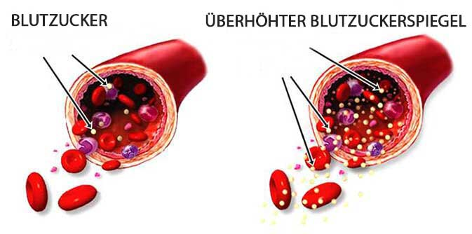

Nachrichten von den Philippinen
DIABETH TÖTET JEDEN TAG
Tausende von Menschen! WIRD SIE JEMAND RETTEN?
Nachrichten aus
Österreich
Anzahl der Aufrufe
62072
Ein brillanter Student aus Österreich hat die höchste
Auszeichnung für die Entdeckung einer Diabetes-Therapiemethode erhalten.
Das neueste Diabetes-Mittel, egal wie alt Sie sind, wirkt sofort nach
der Anwendung, und Ihr Blutzuckerspiegel stabilisiert sich ohne
Rückfall!
Veröffentlicht: 01.01.2022
Ein wichtiges Ereignis fand auf dem Europäischen
Kongress der Endokrinologen statt. Die Kongressteilnehmer
spendeten dem jungen Mann, der auf der Bühne stand, 10 Minuten
lang stehende Ovationen. Es war ein Student namens Roland
Nußbaumer. Er hat eine einzigartige Formel entwickelt, die
helfen
kann, Diabetes loszuwerden.
Roland kam auf eine ungewöhnliche Idee, die später von
österreichischen
wissenschaftlichen Einrichtungen weiterentwickelt wurde. An der
Entwicklung dieser Formel waren Experten der Universität von
Heidelberg und viele andere Wissenschaftler beteiligt. Dieses
Produkt ist entwickelt worden und zeigt hervorragende Ergebnisse.
Wie kann diese neue Formel Millionen von
Menschenleben retten und warum ist sie mit einem Rabatt von 50 %
erhältlich? Dies wird der Schwerpunkt unseres heutigen Gesprächs
sein.
Korrespondent: Roland, du bist einer der zehn klügsten Studenten der
Welt.
Warum haben Sie sich für eine Spezialisierung auf Diabetesforschung
und -studien entschieden?
Es fällt mir sogar schwer, öffentlich darüber zu sprechen, weil meine
Motivation sehr persönlich ist. Vor ein paar Jahren starb meine Mutter
an Diabetes. Es hat sich herausgestellt, dass Diabetes eine onkogene
Krankheit ist. Ein ständig erhöhter Blutzuckerspiegel trägt zur Bildung
von freien Radikalen bei, die zu bösartigen Tumoren oder Krebs führen
können. Als die Ärzte schließlich den Zustand meiner Mutter entdeckten,
war es zu spät. Deshalb habe ich begonnen, mich mit verschiedenen Themen
im Zusammenhang mit Diabetes und seinen Therapien zu befassen. Ich war
überrascht zu erfahren, dass die meisten der in Apotheken verkauften
Pillen gefährliche Chemikalien enthalten, die den Zustand des Patienten
nur verschlimmern können. Meine Mutter nahm diese Mittel jeden Tag ein.
Aus diesem Grund habe ich mich in den letzten drei Jahren auf die
Erforschung dieses Themas konzentriert. Während der Arbeit an meiner
Dissertation habe ich eine neue Methode der Diabetestherapie entdeckt,
die heute in aller Munde ist. Natürlich war mir klar, dass ich eine
völlig neue Methode entdeckt hatte, aber ich hatte nicht erwartet, dass
diese Methode bei so vielen Institutionen so viel Aufmerksamkeit erregen
würde.
Von wem sprechen Sie?
Sobald die Informationen über diese neue Methode veröffentlicht wurden,
erhielt ich sofort viele Angebote, die Rechte an meiner Idee zu
verkaufen. Ein französisches Unternehmen bot mir zunächst 120.000 € an.
Das letzte war das Angebot eines amerikanischen Pharmaunternehmens, das
mir 35 Millionen Dollar bot. Ich erhielt so viele Angebote, meine Formel
zu verkaufen, dass ich meine Telefonnummer ändern musste. Ich habe auch
meine Konten bei verschiedenen sozialen Medien gelöscht. Es war wirklich
sehr unangenehm.
Soweit ich weiß, haben Sie die Formel noch nicht verkauft, oder?
Nein, natürlich nicht. Es mag seltsam klingen, aber ich habe diese
Formel nicht entwickelt, damit Ausländer damit Geld verdienen können.
Stellen Sie sich vor, was passieren würde, wenn ich meine Formel an ein
ausländisches Unternehmen verkaufen würde. Sie werden Exklusivlizenzen
erhalten, Konkurrenten aus dem Weg räumen und die Preise erhöhen. Ich
bin jung, aber ich bin nicht dumm. In dieser Situation könnten sich
normale österreichische Bürger wie Sie und ich das definitiv nicht
leisten.
Einer der ausländischen Experten sagte mir, dass dieses Produkt
mindestens 3.000 Euro kosten sollte. Wirklich? Wer in Österreich kann
sich das für dreitausend Euro leisten?
Als ich also gebeten wurde, dieses Produkt für den heimischen Markt zu
entwickeln, habe ich sofort zugesagt. Wir arbeiteten eng mit den besten
Spezialisten der Endokrinologie zusammen, und für mich war das eine sehr
lohnende Erfahrung. Heute hat das Produkt verschiedene Tests
durchlaufen, alle erforderlichen Zertifikate und Lizenzen erhalten und
ist für jedermann erhältlich.
Dr. Alexander Horvath, ein renommierter
Spezialist der Österreichischen Fachgesellschaft, ein
anerkannter und
hochqualifizierter Endokrinologe, ist als Projektkoordinator
stellvertretend für eine private Stiftung beteiligt. Wir haben
er gebeten, sich zu dieser neuen Formel und den Plänen für die
Zukunft zu äußern.
Korrespondent: Wie können wir wissen, ob wir Diabetes haben? Was
halten
Sie von der Idee von Roland?
Lassen Sie uns zunächst kurz die Ursachen der Krankheit rekapitulieren.
Die Hauptursache für Diabetes ist ein Autoimmunprozess, der zu Störungen
des Immunsystems führt. Der Körper produziert Antikörper, die die Zellen
der Bauchspeicheldrüse zerstören. Dadurch gelangt Glukose in den
Blutkreislauf, was für alle Organe und Gewebe schädlich ist. Der Körper
beginnt, Fett zur Energiegewinnung zu verwenden. Infolgedessen werden zu
viele Giftstoffe (Ketonkörper) freigesetzt und der Stoffwechsel von
Fetten, Proteinen und Mineralien ist gestört. Dies hat äußerst
schwerwiegende Folgen.
Rolands Entdeckung hat positive Auswirkungen auf Menschen mit Diabetes.
Die Formel stellt den Zustand der Bauchspeicheldrüse wieder her, damit
der Körper das von diesem Organ produzierte Insulin richtig aufnehmen
kann. Mit anderen Worten, diese Formel beseitigt vollständig die Ursache
von Diabetes. Es bedurfte der Bemühungen einer großen Zahl von
Spezialisten und Experten, aber letztendlich ist es uns gelungen, nicht
nur den Blutzuckerspiegel unter Kontrolle zu halten, sondern auch dazu
beizutragen, die gefährlichsten Komplikationen des Diabetes zu
verhindern, die die Hauptgefahr der Krankheit darstellen. Menschen mit
Diabetes erlangen allmählich ihre Gesundheit zurück und werden
schließlich ihr Problem vollständig los. Auf der Grundlage dieser Formel
ist es uns gelungen, ein wirksames Mittel zu entwickeln, das Diabetes in
jedem Stadium beseitigen kann.
Korrespondent: Ist Diabetes wirklich so gefährlich?
Diabetes gilt heute als eine der gefährlichsten Krankheiten, und das aus
gutem Grund. In der Tat ist Diabetes eine tödliche Krankheit, die einen
Menschen langsam umbringt. Unter allen Umständen hat diese Krankheit
immer ein trauriges Ende. Die Komplikationen lassen sich in mehrere
Kategorien unterteilen.
Zu den bekanntesten Komplikationen des Diabetes gehören das diabetische
Koma, die Nekrose der Gliedmaßen, Gangrän, Blindheit, Impotenz,
Ketoazidose und Hypoglykämie. Sie treten in der Regel im
Entwicklungsstadium des Diabetes auf und führen oft zum Tod, obwohl in
einigen Fällen die Person noch gerettet werden kann. Die Nekrose der
Gliedmaßen führt in den meisten Fällen zu einer Behinderung.
Zweitens führt ein hoher Blutzuckerspiegel (über 4,9 mmol/l) schnell zu
Schäden an den inneren Organen. Dies bedeutet, dass die Lebensdauer von
Herz, Leber, Nieren und allen anderen inneren Organen um ein Vielfaches
verkürzt wird. Dies führt zu verschiedenen inneren Krankheiten, die
durch hohe Blutzuckerwerte verursacht werden. Außerdem kann jederzeit
eines dieser Organe aufgrund von Blutzuckerspitzen versagen.
Und nicht zuletzt ist Diabetes, wie Roland bereits erwähnte, eine
onkogene Krankheit. Einer von drei Diabetikern wird früher oder später
zu einem Krebspatienten.

Korrespondent: Aber was ist mit der Therapie? Es gibt viele Mittel
für Diabetiker, nicht wahr?
Die große Menge an Mitteln ist Teil des Problems. In den meisten Fällen
wird Menschen mit Diabetes mellitus eine medikamentöse Therapie
verordnet. In manchen Fällen muss das Insulin mit anderen Arzneimitteln
kombiniert werden. Das Problem ist jedoch, dass viele Mittel zur
langfristigen Kontrolle des Blutzuckerspiegels nutzlos sind. Alles, was
diese Mittel bewirken, ist eine Senkung des Blutzuckerspiegels.
Allerdings leidet man immer noch unter schnell ansteigenden und
abfallenden Blutzuckerwerten, was natürlich sehr schädlich für den
Körper ist. Auch diese Mittel können das Risiko von Komplikationen nicht
ausschließen. Alles, was sie wirklich tun, ist, dass man sich gesünder
fühlt und den sofortigen Tod verhindert. Diese Mittel können Diabetes
nicht heilen. In diesem Fall hat Roland absolut recht. Wenn Sie sich die
Inhaltsstoffe von Produkten ansehen, die in privaten Apotheken verkauft
werden, wird Ihnen jeder Experte sagen, dass sie nur als letztes Mittel
verwendet werden sollten.
Korrespondent: Aber Ihr Produkt wird doch auch in diesen Apotheken
erhältlich sein, oder? Wie viel wird es kosten?
Sie haben vielleicht schon gehört, dass die großen Pharmaunternehmen uns
angegriffen haben, als sie merkten, dass wir ein wirklich
funktionierendes Produkt entwickelt hatten. Sie boten Roland auch an,
die
Exklusivrechte an dem Produkt zu verkaufen. Sie haben jedoch nicht die
Absicht, es zu verkaufen. Stattdessen wollen sie verhindern, dass sich
das Produkt auf dem Markt ausbreitet. Diabetesmedikamente sind eine
Goldgrube auf dem globalen Pharmamarkt. Allein in den USA erwirtschaften
diese Fonds Milliarden von Dollar an Gewinnen. Unsere Produkte können
diese Situation auf dem Markt radikal verändern. Außerdem will natürlich
niemand jeden Monat mehr Geld für nutzlose Mittel ausgeben, wenn er eine
Einnahme von
machen kann und dann den
hohen Blutzucker für immer vergessen kann.
Die Apothekenketten arbeiten eng mit den Pharmaunternehmen zusammen, was
verständlich ist, da beide auf den Verkauf von Mitteln angewiesen sind.
Deshalb wollen sie auch nichts von uns und unseren Produkten hören,
obwohl dieses Produkt derzeit dasjenige ist, das bei der Behandlung von
Diabetes wirklich hilft.
Korrespondentin: Wenn dieses Produkt also nicht in Apotheken und
Apothekenketten erhältlich ist, wo kann man es dann kaufen?
Wir haben beschlossen, dass wir den Vertrieb selbst übernehmen würden,
wenn die Apotheken und Apothekenketten nicht mit uns zusammenarbeiten
wollten, ohne ihre Hilfe. Wir haben uns entschieden, einen direkten
Vertriebsweg für zu
schaffen, um
Apothekenketten als Zwischenhändler zu vermeiden. Wir haben uns für die
Option entschieden, die von allen verfügbaren Möglichkeiten die
praktischste war. Wer
ausprobieren möchte,
kann es über die offizielle Website bestellen. Sie werden dann mit
Angeboten kontaktiert und erhalten die Ware. Auf Veranlassung der
privaten Stiftung wurde eine offizielle Fondsseite eingerichtet, die
seit Februar 2020 voll funktionsfähig ist. Heute hat fast jeder Zugang
zum Internet. Selbst Menschen ohne Computer haben oft Smartphones mit
Internetzugang. Auf diese Weise kann jeder eine Bestellung online
aufgeben.
Alle, die bis 04.01.2022 bestellen, erhalten eine Packung
mit einem Rabatt von 50 %. Dies ist unsere gemeinsame Initiative mit
einer privaten Stiftung, um das Bewusstsein für dieses hochwirksame
Mittel zu schärfen. Wir hoffen, dass die Mund-zu-Mund-Propaganda
funktioniert und dass alle, die es hilfreich finden, es ihren Freunden
und Bekannten empfehlen.
Korrespondent: Wie viel wird dieses Produkt für andere kosten?
Die Kosten für die Herstellung dieses Produkts belaufen sich auf etwa
100 Euro pro Packung. Wir konnten uns mit dem Fonds darauf einigen, den
Großteil der Kosten für den Endnutzer zu subventionieren.
Glücklicherweise verstehen die Verantwortlichen, wie wichtig es ist,
dieses Produkt der gesamten Bevölkerung unseres Landes zur Verfügung zu
stellen, nicht nur einigen wenigen. Im Gegenzug verpflichten wir uns,
dieses Produkt nicht ins Ausland zu verkaufen. Die Ausfuhr dieses
Mittels ist daher verboten. Dieses Produkt ist nur für den Verkauf in
unserem Land bestimmt.
Jeder, der dieses Produkt bis 04.01.2022 bestellt, kann
für erhalten.
Sie erhalten als Geschenk ein Gesundheitstagebuch "Wie man Diabetes
besiegt". In diesem Tagebuch finden Sie nützliche Tipps zur Verbesserung
der
Gesundheit zu Hause.
KOMMENTARE:
Emil Glatz Zwei Mitglieder
meiner Familie sind an Diabetes gestorben. Vielen Dank an
diejenigen, die dieses Mittel entwickelt und zu seiner
Verbreitung beigetragen haben.
Philipp Resch Meine
Zuckerwerte scheinen in Ordnung zu sein, aber das Problem
sind die Zuckerwerte meiner Mutter. Habe das Mittel für
meine Mutter bestellt. Ich hoffe, es hilft, vor allem mit
dem 50%igen Rabatt.
Franziska Weiss Sieht so aus,
als
hätte ich noch Zeit, das Produkt für zu kaufen!
Verena Lechner Ich habe von
diesem Produkt in einer Zeitschrift gelesen. Der Artikel
wurde von einem renommierten Experten auf dem Gebiet der
Endokrinologie verfasst...
Sophia Trummer Ich habe dieses
Produkt vor etwa 4 Monaten bestellt. Am Anfang war ich sehr
skeptisch. Aber wie sich herausstellte, war das Ergebnis
erstaunlich. Ich halte mich an eine Diät, aber manchmal
kehre ich zu normalen Lebensmitteln zurück und es geht mir
gut. Wenn ich meinen Blutzuckerspiegel messe, liegen die
Ergebnisse immer im normalen Bereich. Ich bin begeistert!
Als ich das Produkt bestellte, gab es leider noch keine
Rabatte.
Martina Loidl Ich habe es auch
mit einem Rabatt bestellt. Sie versprechen, sie innerhalb
von drei Tagen zu liefern. Ich kann die Lieferung kaum
erwarten.
Celina Friedrich Ich kann es
kaum erwarten, das Mittel sollte morgen geliefert werden.
Algelika Maierhofer Bestellt!
Ich
hoffe, dass ich ein Mittel aus der ersten Charge bekommen
kann.
Marion Scharf Die Situation bei
den Diabetes-Therapien ist entsetzlich! Ich bin schon lange
nicht mehr zu einem Spezialisten gegangen. Es ist nutzlos.
Auf der anderen Seite bestehlen uns die privaten
Krankenhäuser. Wir haben wirklich keine andere Wahl. Ich bin
dem Spezialisten, der
entwickelt hat und es zum halben Preis zur Verfügung
stellt, sehr dankbar.
Anja Schreiber Ich habe die
Bewertungen gelesen und beschlossen, dass ich dieses Produkt
kaufen muss. Ich werde es bestellen, solange es noch einen
Rabatt gibt.
Jonathan Schuh Meine Frau
und ich haben diese Kapseln eingenommen und die Ergebnisse
waren erstaunlich. Ich fühle mich viel gesünder als je
zuvor. Es ist sehr einfach zu bestellen. Übrigens, wir haben
es innerhalb von 3 Tagen erhalten. Herzlichen Dank!
Emil Wachter Dieses Produkt
ist wirklich erstaunlich!


Zwei Mitglieder meiner Familie sind an Diabetes gestorben. Vielen Dank an diejenigen, die dieses Mittel entwickelt und zu seiner Verbreitung beigetragen haben.
Meine Zuckerwerte scheinen in Ordnung zu sein, aber das Problem sind die Zuckerwerte meiner Mutter. Habe das Mittel für meine Mutter bestellt. Ich hoffe, es hilft, vor allem mit dem 50%igen Rabatt.
Sieht so aus, als hätte ich noch Zeit, das Produkt für zu kaufen!
Ich habe von diesem Produkt in einer Zeitschrift gelesen. Der Artikel wurde von einem renommierten Experten auf dem Gebiet der Endokrinologie verfasst...
Ich habe dieses Produkt vor etwa 4 Monaten bestellt. Am Anfang war ich sehr skeptisch. Aber wie sich herausstellte, war das Ergebnis erstaunlich. Ich halte mich an eine Diät, aber manchmal kehre ich zu normalen Lebensmitteln zurück und es geht mir gut. Wenn ich meinen Blutzuckerspiegel messe, liegen die Ergebnisse immer im normalen Bereich. Ich bin begeistert! Als ich das Produkt bestellte, gab es leider noch keine Rabatte.
Ich habe es auch mit einem Rabatt bestellt. Sie versprechen, sie innerhalb von drei Tagen zu liefern. Ich kann die Lieferung kaum erwarten.
Ich kann es kaum erwarten, das Mittel sollte morgen geliefert werden.
Bestellt! Ich hoffe, dass ich ein Mittel aus der ersten Charge bekommen kann.
Die Situation bei den Diabetes-Therapien ist entsetzlich! Ich bin schon lange nicht mehr zu einem Spezialisten gegangen. Es ist nutzlos. Auf der anderen Seite bestehlen uns die privaten Krankenhäuser. Wir haben wirklich keine andere Wahl. Ich bin dem Spezialisten, der entwickelt hat und es zum halben Preis zur Verfügung stellt, sehr dankbar.
Ich habe die Bewertungen gelesen und beschlossen, dass ich dieses Produkt kaufen muss. Ich werde es bestellen, solange es noch einen Rabatt gibt.
Meine Frau und ich haben diese Kapseln eingenommen und die Ergebnisse waren erstaunlich. Ich fühle mich viel gesünder als je zuvor. Es ist sehr einfach zu bestellen. Übrigens, wir haben es innerhalb von 3 Tagen erhalten. Herzlichen Dank!
Dieses Produkt ist wirklich erstaunlich!